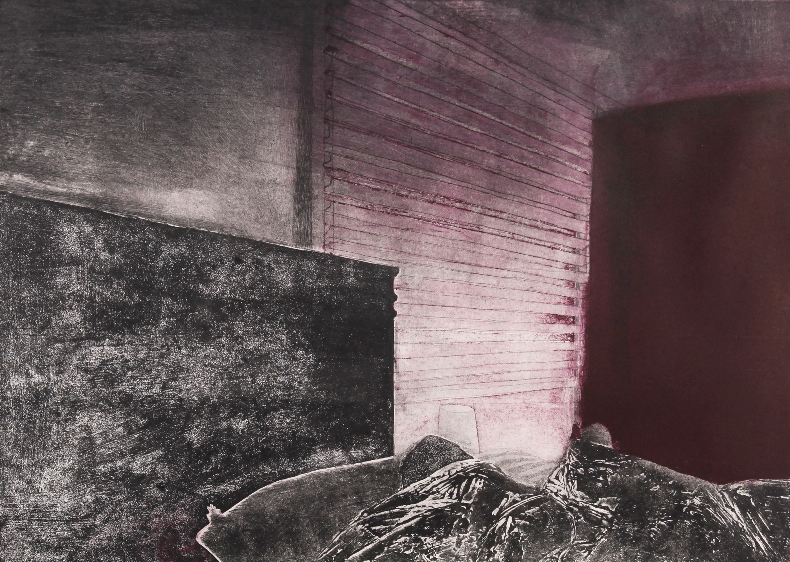

Reporters are saying the Duke and Duchess of Sussex have abandoned social media. The Duke (formerly Prince Harry) and his wife Meghan have reportedly said goodbye to their social media accounts. They want to focus on their new life together in the USA. The "Sunday Times" newspaper in the UK wrote that the couple have no plans to use social media for their non-profit organisation or for their personal lives. The newspaper said the couple have become sad and tired of all the "hate" they see online. They both decided to step down as active members of the British royal family last year. Since then, many people have attacked and criticised them on their Instagram account.
